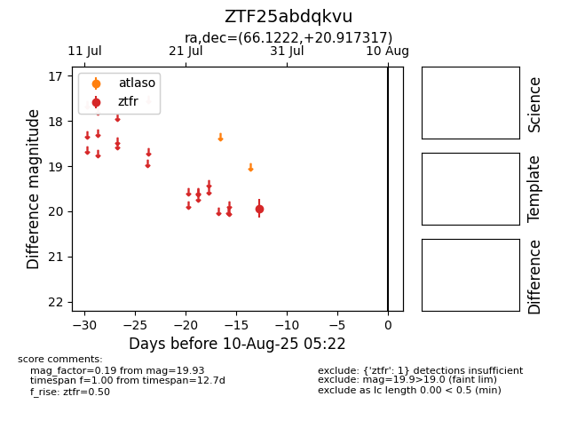

Target ZTF25abdqkvu at 2025-08-10 05:22, see:
FINK: fink-portal.org/ZTF25abdqkvu
Lasair: lasair-ztf.lsst.ac.uk/objects/ZTF25abdqkvu
ALeRCE: alerce.online/object/ZTF25abdqkvu
alt names
ZTF25abdqkvu (ztf,fink)
coordinates:
equatorial (ra, dec) = (66.1222,+20.91732)
galactic (l, b) = (175.5229,-19.54001)
photometry
last ztfr=19.93
1 ztfr detections
